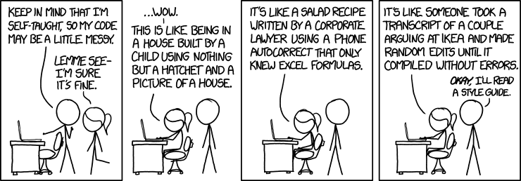

Contributing¶
Roadmap¶
Contributors to Shift are sought, particularly if you are interested in incorporating Shift into your research.
Refer to the Github issues page for possible development tasks or contact the author if you have other development/research ideas.
Coding Style¶
This guide describes the coding style used in Shift.


Figure 1: credit: xkcd
Comments¶
Use Doxygen style comment blocks for all functions and member functions in .c and .cpp files. Members of classes and structs should be documented in the corresponding .h or .hpp file. Doxygen style comment blocks should accompany every function in the declaration itself, not in the header file. In this way the description of how to use the code and the code itself are found in the same location and can more easily be maintained. Add [in] and [out] to every variable in the call list - note that this is particularly useful for subroutines which may change/modify data found at an address specified in one of the inputs to the subroutine.
These comment blocks are intended to convey to other users of your code how to use/call the functions and what values are returned.
/*!
@brief adds two to an integer
Detailed description here.
@param bar [in] an integer to add two to.
@return output integer.
*/
int foo(int bar) {
return bar + 2;
}
- Use comment blocks (\* *\) to describe how code works inline with your code. Use proper English in your comment blocks. Be succinct, but provide sufficient detail so that others can understand what you are doing. Do not write comments in all caps. Do not use comment blocks to temporarily comment out blocks of code for debugging purposes. The use of comment blocks within code conveys that these are intentional messages written for the benefit of other developers of the code, not necessarily for end-users of the code. Comment blocks may be interspersed anywhere within the code – where clarification is deemed necessary.
\* This is a descriptive comment. *\
\* This is a descriptive comment that spans multiple lines. Do not use
asterisks at the beginning of each line within a comment block. Modern
interpreters highlight comment blocks in a different color so it is not
necessary to add the additional asterisks to make the comment block stand
out from the rest of the code. The use of asterisks at the beginning of
each line within a comment block makes it more difficult to maintain. Use
an opening and closing mark only. *\
- Use the double slash (\) comment to temporarily comment out a block of code for debugging purposes. The use of the (\) comment conveys to other developers that the commented out block of code is a candidate for removal once the program has been verified to work correctly.
\\ someTestFunction();
someOtherFunction();
Indentation / Spaces¶
- Use two spaces for indentation in C and C++. (Use 4 spaces in Python.)
- Provide spaces after commas and around operators to improve readability. For example:
someFunction(a, b, c);
int a = 1;
if(a < 2) {
printf("%d\n", a);
}
- Always use brackets {} in for loops, even if it is just a single line. This makes it easier to debug or add additional functions to a for loop later. For loops should follow the convention:
for(int i = 0; i < 5; i++) {
printf("%d\n", i);
}
- if/else statements should follow the convention:
if(a < b) {
printf("a < b\n");
} else if(a == b) {
printf("a == b\n");
} else {
printf("a > b\n");
}
- switch statements follow the convention:
switch(value) {
case CASE1: {
someFunction();
} break;
case CASE2: {
someOtherFunction();
} break;
default: {
defaultFunction();
} break;
}
- Pointers follow the convention:
double* a;
Scope of variables¶
- Try to reduce the scope of variables as practical. For example, it is preferred to declare an integer within a for loop, rather than declaring an integer at the beginning of a function and reusing it in multiple for loops. Reducing the scope of variables makes no different in execution speed or stack allocation and is easier to read and debug. An example of the preferred syntax is shown below:
void testFunction() {
for(int i = 0; i < 3; i++) {
printf("d ", i);
}
printf("\n");
for(int i = 0; i < 10; i++) {
printf("%d ", i);
}
printf("\n");
}
Classes¶
- Use PascalCase for class names
- use mixedCase for member functions.
- preface all member variables with m_
- An example .hpp file containing a class:
class MyTreeItem : public QTreeWidgetItem {
public:
MyTreeItem(int type) {
m_object = NULL;
m_userType = type;
}
~MyTreeItem() {}
QString m_name; /*!< the name of the tree item*/
void* m_object; /*!< pointer to an object associated with this tree item*/
int m_userType; /*!< an integer specifying the user type associated
with this tree item: (1002: assembly,
1003: body group, 1004: body, 1005: frame,
1006: joint group, 1007: joint, 1008: light group,
1009: light, 1010: restraint group,
1011: restraint, 1012: io group, 1013: io)*/
};
Other¶
- Avoid global variables and macros.
- Avoid declaring multiple variables on a single line. Each declaration should be on its own line.
- If functions already exist in standard C libraries, it is preferred to use those functions over custom functions for the same purpose.
- As possible, full–dense numerical algorithms should be written to take advantage of the cblas library for moderate to large sized vectors/matrices.
- Use .cpp and .hpp file extensions for C++ code. Use .c and .h file extensions for C code.
- In C, the data structure foo shall have a typedef s2_foo_t, where the s2 prefix indicates the shift namespace.
- Each data structure in .c shall have a constructor and destructor with the prototypes s2_foo_t* s2_foo() and s2_foo_free(s2_foo_t*).
- The member functions (i.e. functions that operate on s2_foo_t) shall have the prototype s2_foo_bar(s2_foo_t* foo, <additional arguments>) where bar is a description of the operation being performed. The function name bar should follow the mixedCase convention with the first letter lowercase.
Using Artistic Style¶
The Shift repository contains an Artistic Style configuration file that can be used to auto-format code to follow most of the conventions described above. Artistic Style can be obtained through their website or using your package manager. To run Artistic Style on your code, from the top level directory of the git repository run:
astyle --options=.astyle.cfg <path_to_file>